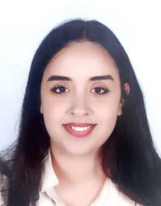

Contact:
- Ingénieur géomètre topographe
- Rabat, Maroc
- bouferdousnada2000
- +212657189907
- NADA BOUFERDOUS
Compétences:
- Modelisation 2D-3D: Autocad, Sketchup
- Programation: Python, VB, Matlab
- SIG: QGIS, ArcGIS
- Traitement: Agisoft, Pix4D
- SGBDRO : PostgreSQL
Langues:
- French
- Arabic
- English
BOUFERDOUS NADA
Informations Personnelles
- Elève en 3ème année cycle ingénieur en sciences géomatiques et ingénierie topographique à l’ESGIT- IAV HASSAN II
- Etudiante en deuxième année licence fondamentale droit en Français à la faculté des Sciences Juridiques, Economiques et Sociales Mohammed V (Rabat)
- Gérante de société B.F.S COMPANY S.A.R.L : marchand de matériel agricole et installation du système d'irrigation crée en 2021
Expériences Professionnelles
- Stage à L’Agence Nationale de la Conservation Foncière, du Cadastre et de la Cartographie - Benslimane
- 05 Sept - 16 Sept 2022
- -Pratique des travaux cadastraux
- -Découvrir la législation et les lois qui régissent le métier du géomètre topographe
- Stage de professionnalisme
- Mai - Juin 2022
- - Densification du réseau géodésique
- - Levé topographique
- - Génération d’un ortho photoplan par photogrammétrie aérienne
- Stage d’initiation à SYNERGIE TOPO S.A.R.L
- JUIN– JUILLET 2021
- - Prestations topographiques et foncières
- - L’établissement d’un dossier technique de Mise en concordance et de copropriété des titres fonciers
- Stage de découverte de la nature à L’A.P.E.S.A
- JUILLET 2019
- - Enquête socio-économique..
- - L'autonomie et l'indépendance
- - L'esprit d'équipe
Diplomes & Formations
- Université Mohammed 5 – RABAT
- Sept 2021 - Currrent
- DEUG Droit en francais
- ESGT – TEMARA
- Décembre 2020
- Formation « Traitement des images drones »
- Baccalauréat libre
- Juin 2020
- Baccalauréat libre en sciences mathématiques A option française : mention très bien
- INSTITUT AGRONOMIQUE ET VETERINAIRE HASSAN II
- DEPUIS SEPTEMBRE 2019
- Formation en sciences géomatiques et ingénierie topographique
- ANNEE PREPARATOIRE AUX ETUDES SUPERIEURS EN AGRONOMIE (APESA)
- SEPTEMBRE 2018- JUILLET 2019
- LYCEE IBN KHALDOUN - BOUZNIKA
- 2017-2018
- Baccalauréat en sciences physiques option française : mention très bien.
Expériences Associatives
- Membre du bureau exécutif de l'association marocaine des étudiants topographes : Responsable parascolaire
- 2020-2021
- - Chapeauter et gérer les différentes activités sociales.
- - Le garant de la bonne conduite de la gestion des projets sociaux.
- Participation dans la caravane médicale à Foum Oudy
- Juillet 2021 ET Mars 2022
- - Caravane médicale en faveur des handicaps trisomiques.